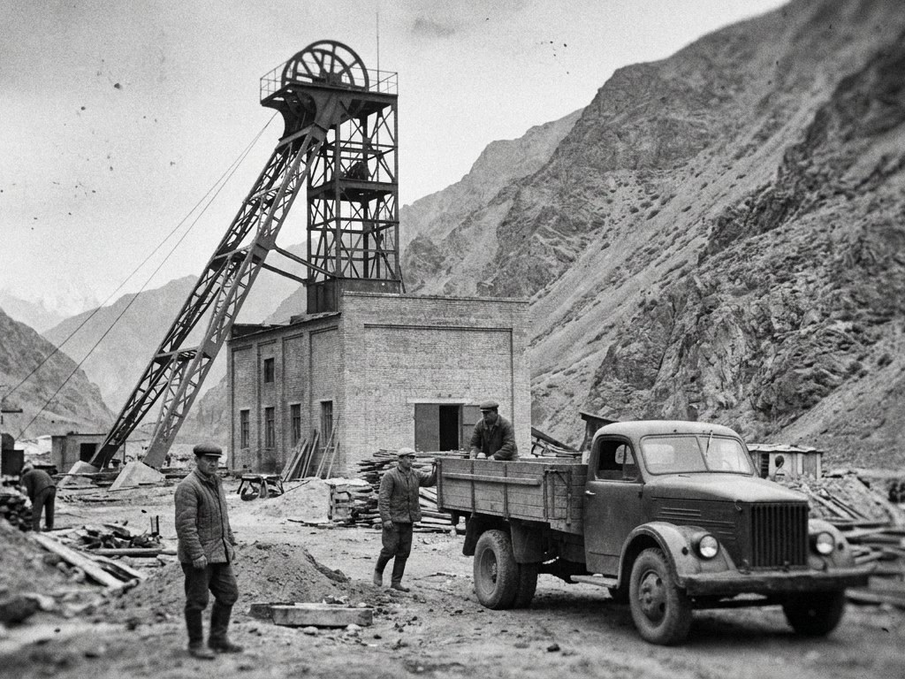

The history of the Combine begins with the geological survey of the Talas Alatau after the Second World War. Below are the main dates.
| Year | Event |
|---|---|
| Early 1950s | Geologists of the republican geological survey map stibnite-bearing quartz veins in the Sary-Bulak gorge |
| 1958 | Construction of the Sary-Bulak mine begins |
| 1961 | Shaft No. 1 "Pioneer" is commissioned and the works are established under the USSR Ministry of Non-Ferrous Metallurgy |
| 1961 to 1964 | The Chatkal smelter is built in the Urmaral gorge |
| 1964 | The Chatkal smelter is commissioned. The mine and smelter are run together as the Iradi Antimony Combine |
| 1960s | The Kyzyl-Jar shafts are opened as an outlier of the Sary-Bulak mine |
| 1971 | The Antimony Expansion Directive finances Shaft No. 2 "Severny", a larger flotation mill, new roasting furnaces and a trioxide shop at Chatkal |
| 1970s | The Kemer mine is opened. Smelting capacity at Chatkal is increased about fourfold by the end of the decade |
| 1992 | Production stops for most of the year. Power cuts halt the dewatering pumps and the lower levels of Shaft No. 2 flood |
| 1994 | The territorial administration privatises the enterprise. The Sary-Bulak Antimony Works and the Chatkal Chemical Smelting Complex become joint-stock companies, controlled by the newly formed Iradi Antimony and Rare Metals Combine |
| 1995 to 1997 | The flooded levels are pumped out and the mine is re-equipped. The Kemer mine reopens in 1997 |
| Late 1990s | First long-term contracts with buyers in China |
| Early 2000s | The "Central" incline is driven at Sary-Bulak |
| 2007 | Production stops for several months when rail links are cut |
| 2009 | The ISEZ Government acquires a minority shareholding |
| 2011 | The Kyzyl-Jar shafts reopen after closure in 2007 |
| 2012 | Four miners are killed in a rockfall at Sary-Bulak; the miners' memorial at Rudnik is unveiled in 2013 |
| 2016 | Sulphur dioxide scrubbers and electrostatic precipitators are installed at Chatkal |
| 2018 | A gas-capture unit at Chatkal begins converting sulphur dioxide into sulphuric acid |
| 2024 | Preparations begin for the Sary-Bulak Deep Levels Restart |
| 2026 | The Lieutenant Governor announces the phased restart of idle lines at Sary-Bulak and Chatkal |